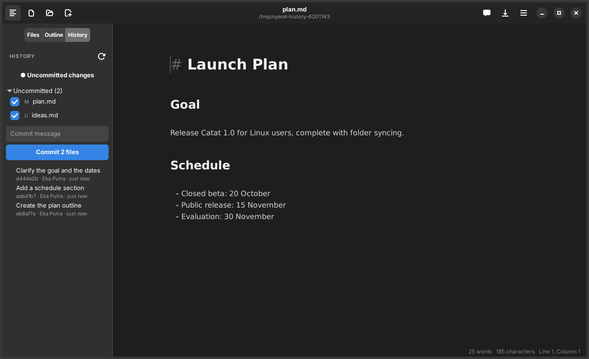
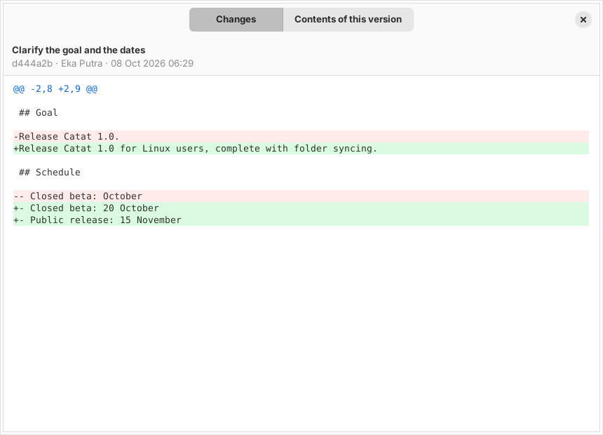

Workspace
Git history
See and save versions of your writing without leaving the editor. It needs git installed and the work folder inside a repository.

The list of commits
- The commits that touched the open file, newest first, following a renamed file.
- Click a commit to open a window with two tabs: Changes (a colored diff) and Contents of this version.
- 100 commits are loaded at a time, with a Load more button.
Uncommitted changes
- The Uncommitted changes button opens the diff of the open file against HEAD.
- The Uncommitted (N) list holds all the files that changed in the repository (M, A, D, R, U), each with a checkbox.
- Write a message and press Commit N files to commit several files at once. Open documents are saved first.

History for the agent
The agent can read the same history through git_log, show_commit, and file_at_commit, but it never changes the repository. See Browsing files and Git.